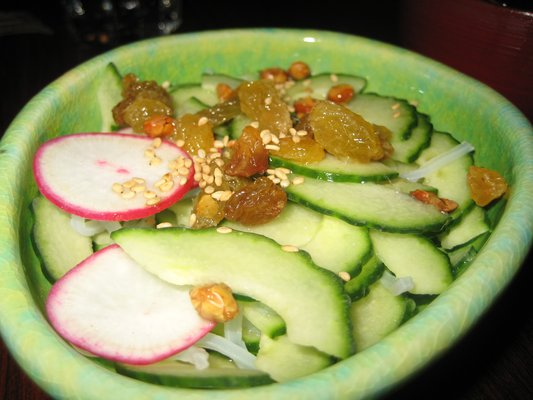
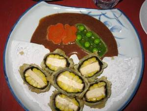
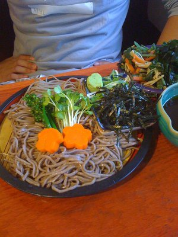
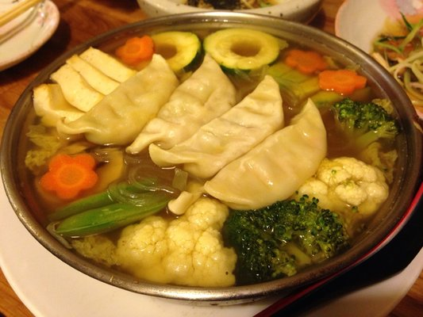
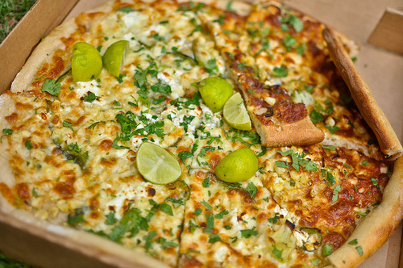

|
food
Some of my favorite foods in Berkeley:
Pizzahhh!
Whole pie with Peppadew, arugula, ricotta, balsamic glaze, and a little bit of crushed red pepper and garlic powder.
Cha Ya
|  |
 |
 |
 |
| Cucumber, golden raisin, roasted soybean, radish, and rice wine vinegar salad, |
Corn and tofu "sushi" with almond sauce, |
Cold soba with wasabi, green onions, daikon sprouts, and a really great dipping sauce (though I don't know what it is...), |
Gyoza hot pot with kabocha squash, snap peas, tofu, carrots, broccoli, cauliflower, zucchini, mushrooms, silver noodles, and Napa cabbage, |
...and unlimited cold barley tea.
Hot Cups
Turkey and brie on French roll (fresh from Semifreddi's).
Cheeseboard
|  |
| Pizza with chile pasilla, onions, French feta, mozzarella, Mexican key limes, cilantro, garlic olive oil, and their serrano pepper and cilantro hot sauce. |
|